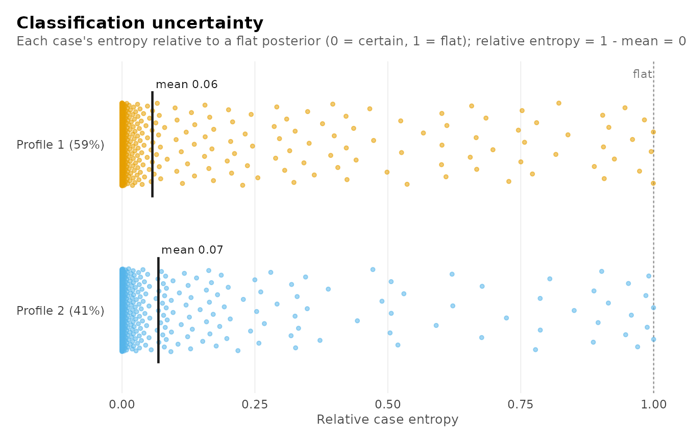
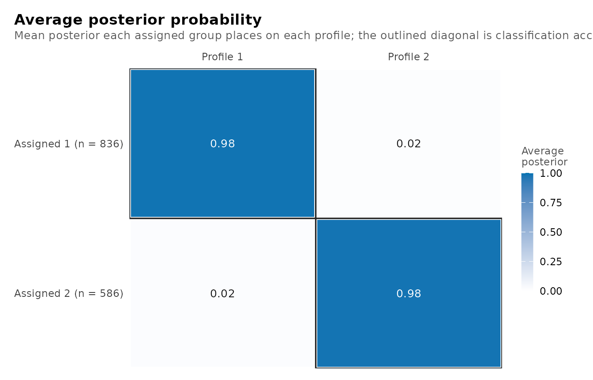
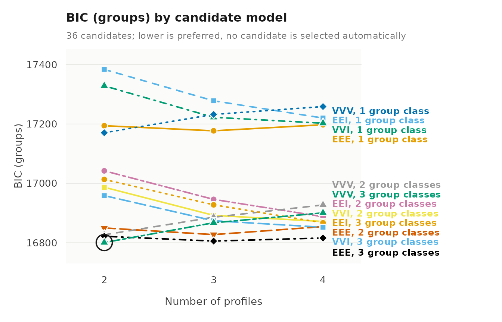

Evaluating a multilevel latent profile model
Written by Mohammed Saqr and Sonsoles López-Pernas
Source:vignettes/evaluation.Rmd
evaluation.RmdA fitted mixture model is evaluated on four questions: whether the estimation found a stable solution, how clearly observations and groups are classified, whether the indicators are independent within profiles as the model assumes, and whether a different number of profiles or group classes fits better.
Data
course_engagement has one row per course enrolment:
1,422 enrolments from 106 students. student identifies the
group, and five activity measures (browse,
lectures, forum_read, forum_post,
attendance) are the indicators, each standardized within
course.
The model to evaluate
To fit the model, we call multilpa() with
vars for the indicators, id for the group,
n_profiles for the number of profiles,
n_group_classes for the number of group classes,
n_starts for the number of random EM starts, and
seed for reproducible starts.
Estimation
To check convergence, we call get_results() with
"model". converged reports convergence of the
best start, boundary whether a variance reached its lower
bound, and n_best_replicated how many starts reached the
best log likelihood.
get_results(fit, "model")
#> n_observations n_informative n_groups n_profiles n_group_classes centering covariance_structure
#> 1 1422 1422 106 2 2 none VVI
#> n_parameters n_parameters_with_measurement log_likelihood aic bic_groups bic_individual
#> 1 23 23 -8440 16926 16987 17047
#> converged iterations boundary small_classes best_start n_best_replicated
#> 1 TRUE 9 FALSE FALSE 1 3To check the individual starts, we call get_results()
with "starts".
get_results(fit, "starts")
#> start log_likelihood converged iterations error boundary
#> 1 1 -8440 TRUE 9 <NA> FALSE
#> 2 2 -8440 TRUE 12 <NA> FALSE
#> 3 3 -8440 TRUE 9 <NA> FALSETo check whether other random seeds reach the same solution, we call
sensitivity() with seeds for the seeds to try.
optimum numbers the distinct maxima found, and
agreement is the share of observations assigned as in the
original fit, after matching the arbitrary profile labels.
sensitivity(fit, seeds = 1:3)
#> seed log_likelihood converged iterations optimum best agreement
#> 1 1 -8440 TRUE 9 1 TRUE 1
#> 2 2 -8440 TRUE 9 1 TRUE 1
#> 3 3 -8440 TRUE 9 1 TRUE 1Classification
To obtain relative entropy, we call get_results() with
"entropy". It is reported for observations and for groups:
1 means every case is assigned with certainty, 0 means no
separation.
get_results(fit, "entropy")
#> level n_classes n_units entropy_sum relative_entropy
#> 1 individuals 2 1422 60.94 0.938
#> 2 groups 2 106 4.43 0.940To obtain classification quality by class, we call
get_results() with "classification".
n_modal is the number of cases assigned to the class,
average_posterior the mean posterior probability of those
cases, and odds_correct_classification compares that
certainty with the class’s size.
get_results(fit, "classification")
#> level class n_modal proportion_modal estimated_n estimated_proportion average_posterior
#> 1 individuals 1 836 0.588 834.1 0.587 0.985
#> 2 individuals 2 586 0.412 587.9 0.413 0.982
#> 3 groups 1 71 0.670 71.5 0.675 0.992
#> 4 groups 2 35 0.330 34.5 0.325 0.969
#> odds_correct_classification
#> 1 46.1
#> 2 76.4
#> 3 59.9
#> 4 64.8To see the uncertainty, we call plot() with
what = "entropy" for the per-case uncertainty within each
profile, and with what = "avepp" for the average posterior
of each assigned class across all classes.
plot(fit, what = "entropy")
plot(fit, what = "avepp")
Local independence
The default model assumes the indicators are independent within a
profile. To test this, we call get_results() with
"residuals". residual is the correlation
between two indicators that the profiles leave unexplained;
by = "overall" pools the profiles. The p-values are
approximate.
get_results(fit, "residuals", by = "overall")
#> profile indicator_1 indicator_2 kind observed expected residual effective_n statistic df
#> 1 overall forum_read attendance gaussian 0.21588 0 0.21588 1422 8.2620 NA
#> 2 overall lectures attendance gaussian 0.19234 0 0.19234 1422 7.3369 NA
#> 3 overall browse attendance gaussian 0.18077 0 0.18077 1422 6.8850 NA
#> 4 overall forum_post attendance gaussian 0.17239 0 0.17239 1422 6.5594 NA
#> 5 overall browse forum_read gaussian 0.06265 0 0.06265 1422 2.3632 NA
#> 6 overall browse forum_post gaussian -0.02511 0 -0.02511 1422 -0.9461 NA
#> 7 overall browse lectures gaussian -0.02126 0 -0.02126 1422 -0.8009 NA
#> 8 overall forum_read forum_post gaussian 0.01986 0 0.01986 1422 0.7483 NA
#> 9 overall lectures forum_post gaussian 0.01710 0 0.01710 1422 0.6440 NA
#> 10 overall lectures forum_read gaussian 0.00193 0 0.00193 1422 0.0725 NA
#> p_value p_adjusted
#> 1 1.43e-16 1.43e-16
#> 2 2.19e-13 2.19e-13
#> 3 5.78e-12 5.78e-12
#> 4 5.40e-11 5.40e-11
#> 5 1.81e-02 1.81e-02
#> 6 3.44e-01 3.44e-01
#> 7 4.23e-01 4.23e-01
#> 8 4.54e-01 4.54e-01
#> 9 5.20e-01 5.20e-01
#> 10 9.42e-01 9.42e-01To relax the assumption, we call multilpa() with
covariance_model = "full", which estimates the covariances
between indicators within each profile. To compare the two models, we
call get_results() with "information_criteria"
on each; lower values are better.
full <- multilpa(course_engagement,
vars = c("browse", "lectures", "forum_read", "forum_post",
"attendance"),
id = "student", n_profiles = 2, n_group_classes = 2,
covariance_model = "full", n_starts = 3, seed = 1)
get_results(fit, "information_criteria")
#> log_likelihood n_parameters aic kic bic_groups bic_individual sabic_groups sabic_individual
#> 1 -8440 23 16926 16952 16987 17047 16914 16974
#> caic_groups caic_individual awe_groups awe_individual icl_groups icl_individual clc_groups
#> 1 17010 17070 17172 17404 16996 17168 16889
#> clc_individual
#> 1 17002
get_results(full, "information_criteria")
#> log_likelihood n_parameters aic kic bic_groups bic_individual sabic_groups sabic_individual
#> 1 -8313 43 16712 16758 16827 16938 16691 16802
#> caic_groups caic_individual awe_groups awe_individual icl_groups icl_individual clc_groups
#> 1 16870 16981 17165 17564 16835 17123 16635
#> clc_individual
#> 1 16811
get_results(full, "residuals", by = "overall")
#> profile indicator_1 indicator_2 kind observed expected residual effective_n statistic df
#> 1 overall lectures attendance gaussian 0.20502 0.20502 1.76e-06 1422 6.94e-05 NA
#> 2 overall browse attendance gaussian 0.20383 0.20382 1.57e-06 1422 6.16e-05 NA
#> 3 overall browse lectures gaussian -0.01381 -0.01381 1.51e-06 1422 5.69e-05 NA
#> 4 overall forum_post attendance gaussian 0.18790 0.18790 1.49e-06 1422 5.82e-05 NA
#> 5 overall lectures forum_post gaussian 0.02007 0.02007 1.40e-06 1422 5.29e-05 NA
#> 6 overall browse forum_post gaussian -0.01867 -0.01867 1.24e-06 1422 4.67e-05 NA
#> 7 overall lectures forum_read gaussian 0.00885 0.00885 1.17e-06 1422 4.39e-05 NA
#> 8 overall forum_read attendance gaussian 0.24179 0.24179 7.72e-07 1422 3.09e-05 NA
#> 9 overall browse forum_read gaussian 0.07442 0.07442 5.60e-07 1422 2.12e-05 NA
#> 10 overall forum_read forum_post gaussian 0.02435 0.02435 4.90e-07 1422 1.85e-05 NA
#> p_value p_adjusted
#> 1 1 1
#> 2 1 1
#> 3 1 1
#> 4 1 1
#> 5 1 1
#> 6 1 1
#> 7 1 1
#> 8 1 1
#> 9 1 1
#> 10 1 1Number of profiles and group classes
To compare numbers of profiles and group classes, we call
enumerate_classes() with n_profiles and
n_group_classes for the counts to cross. It crosses the
counts with four covariance structures, equal or varying variances with
and without covariances, fits every combination, and does not choose a
model.
candidates <- enumerate_classes(course_engagement,
vars = c("browse", "lectures", "forum_read",
"forum_post", "attendance"),
id = "student", n_profiles = 2:4,
n_group_classes = 1:3, n_starts = 3, seed = 1)
as.data.frame(candidates)
#> n_profiles n_group_classes model log_likelihood n_parameters aic kic bic_groups
#> 1 2 1 EEI -8655 16 17341 17360 17384
#> 2 3 1 EEI -8588 22 17219 17244 17278
#> 3 4 1 EEI -8545 28 17145 17176 17220
#> 4 2 2 EEI -8479 18 16994 17015 17042
#> 5 3 2 EEI -8415 25 16879 16907 16946
#> 6 4 2 EEI -8369 32 16802 16837 16888
#> 7 2 3 EEI -8460 20 16960 16983 17013
#> 8 3 3 EEI -8399 28 16853 16884 16928
#> 9 4 3 EEI -8350 36 16771 16810 16867
#> 10 2 1 VVI -8615 21 17272 17296 17328
#> 11 3 1 VVI -8537 32 17137 17172 17222
#> 12 4 1 VVI -8501 43 17088 17134 17203
#> 13 2 2 VVI -8440 23 16926 16952 16987
#> 14 3 2 VVI -8365 35 16799 16837 16892
#> 15 4 2 VVI -8326 47 16746 16796 16872
#> 16 2 3 VVI -8421 25 16892 16920 16959
#> 17 3 3 VVI -8348 38 16773 16814 16874
#> 18 4 3 VVI -8307 51 16716 16770 16852
#> 19 2 1 EEE -8536 26 17125 17154 17194
#> 20 3 1 EEE -8514 32 17092 17127 17177
#> 21 4 1 EEE -8510 38 17096 17137 17197
#> 22 2 2 EEE -8360 28 16775 16806 16850
#> 23 3 2 EEE -8332 35 16734 16772 16827
#> 24 4 2 EEE -8329 42 16742 16787 16854
#> 25 2 3 EEE -8341 30 16742 16775 16822
#> 26 3 3 EEE -8314 38 16704 16745 16806
#> 27 4 3 EEE -8301 46 16693 16742 16816
#> 28 2 1 VVV -8490 41 17061 17105 17170
#> 29 3 1 VVV -8472 62 17067 17132 17232
#> 30 4 1 VVV -8436 83 17038 17124 17259
#> 31 2 2 VVV -8313 43 16712 16758 16827
#> 32 3 2 VVV -8291 65 16713 16781 16886
#> 33 4 2 VVV -8261 87 16696 16786 16927
#> 34 2 3 VVV -8295 45 16681 16729 16801
#> 35 3 3 VVV -8275 68 16686 16757 16867
#> 36 4 3 VVV -8238 91 16658 16752 16901
#> bic_individual sabic_groups sabic_individual caic_groups caic_individual awe_groups
#> 1 17425 17333 17374 17400 17441 17506
#> 2 17335 17209 17265 17300 17357 17447
#> 3 17293 17131 17204 17248 17321 17435
#> 4 17089 16985 17032 17060 17107 17189
#> 5 17011 16867 16932 16971 17036 17146
#> 6 16971 16787 16869 16920 17003 17142
#> 7 17065 16950 17002 17033 17085 17208
#> 8 17000 16839 16911 16956 17028 17188
#> 9 16961 16753 16846 16903 16997 17182
#> 10 17383 17262 17316 17349 17404 17489
#> 11 17306 17121 17204 17254 17338 17468
#> 12 17314 17067 17178 17246 17357 17532
#> 13 17047 16914 16974 17010 17070 17172
#> 14 16983 16782 16872 16927 17018 17169
#> 15 16994 16723 16844 16919 17041 17241
#> 16 17024 16880 16944 16984 17049 17193
#> 17 16973 16754 16852 16912 17011 17212
#> 18 16985 16691 16823 16903 17036 17284
#> 19 17262 17112 17179 17220 17288 17393
#> 20 17260 17076 17158 17209 17292 17422
#> 21 17296 17077 17175 17235 17334 17489
#> 22 16922 16761 16833 16878 16950 17073
#> 23 16918 16717 16807 16862 16953 17103
#> 24 16963 16722 16830 16896 17005 17184
#> 25 16900 16727 16804 16852 16930 17093
#> 26 16904 16686 16784 16844 16942 17134
#> 27 16935 16671 16789 16862 16981 17205
#> 28 17277 17041 17147 17211 17318 17485
#> 29 17393 17036 17196 17294 17455 17707
#> 30 17474 16996 17210 17342 17557 17895
#> 31 16938 16691 16802 16870 16981 17165
#> 32 17055 16681 16848 16951 17120 17392
#> 33 17153 16652 16877 17014 17240 17602
#> 34 16917 16658 16775 16846 16962 17188
#> 35 17044 16652 16828 16935 17112 17429
#> 36 17137 16613 16848 16992 17228 17634
#> awe_individual icl_groups icl_individual clc_groups clc_individual profile_entropy group_entropy
#> 1 17755 17384 17591 17309 17475 0.916 NA
#> 2 18396 17278 18170 17175 18010 0.733 NA
#> 3 18673 17220 18386 17089 18182 0.723 NA
#> 4 17406 17052 17221 16968 17091 0.933 0.937
#> 5 18076 16954 17820 16838 17638 0.741 0.944
#> 6 18408 16897 18080 16748 17848 0.719 0.935
#> 7 17397 17055 17192 16962 17047 0.936 0.820
#> 8 18098 16973 17811 16843 17608 0.741 0.804
#> 9 18432 16906 18063 16738 17801 0.720 0.831
#> 10 17753 17328 17537 17230 17385 0.922 NA
#> 11 18345 17222 18017 17073 17785 0.772 NA
#> 12 18800 17203 18359 17002 18047 0.735 NA
#> 13 17404 16996 17168 16889 17002 0.938 0.940
#> 14 18000 16901 17640 16737 17386 0.790 0.943
#> 15 18503 16881 18021 16662 17680 0.739 0.937
#> 16 17398 17001 17142 16885 16960 0.940 0.816
#> 17 18012 16921 17622 16744 17346 0.792 0.797
#> 18 18537 16893 18014 16656 17644 0.739 0.823
#> 19 17793 17194 17526 17073 17338 0.866 NA
#> 20 18572 17177 18244 17028 18012 0.685 NA
#> 21 18881 17197 18491 17020 18215 0.697 NA
#> 22 17407 16859 17120 16728 16917 0.900 0.940
#> 23 18175 16835 17815 16672 17561 0.713 0.949
#> 24 18556 16862 18125 16667 17820 0.705 0.945
#> 25 17396 16863 17089 16723 16871 0.904 0.821
#> 26 18182 16843 17792 16666 17517 0.716 0.840
#> 27 18590 16852 18118 16638 17784 0.700 0.844
#> 28 17945 17170 17524 16979 17226 0.875 NA
#> 29 18666 17232 18030 16943 17580 0.796 NA
#> 30 18860 17259 18009 16872 17406 0.864 NA
#> 31 17564 16835 17123 16635 16811 0.906 0.942
#> 32 18218 16894 17552 16590 17080 0.841 0.948
#> 33 18808 16935 17915 16529 17284 0.807 0.947
#> 34 17558 16843 17096 16634 16770 0.909 0.816
#> 35 18279 16908 17581 16591 17088 0.828 0.824
#> 36 18772 16937 17838 16512 17178 0.822 0.845
#> converged boundary n_best_replicated warnings error
#> 1 TRUE FALSE 3 <NA>
#> 2 TRUE FALSE 3 <NA>
#> 3 TRUE FALSE 3 <NA>
#> 4 TRUE FALSE 3 <NA>
#> 5 TRUE FALSE 3 <NA>
#> 6 TRUE FALSE 3 <NA>
#> 7 TRUE FALSE 3 <NA>
#> 8 TRUE FALSE 3 <NA>
#> 9 TRUE FALSE 2 <NA>
#> 10 TRUE FALSE 3 <NA>
#> 11 TRUE FALSE 3 <NA>
#> 12 TRUE FALSE 3 <NA>
#> 13 TRUE FALSE 3 <NA>
#> 14 TRUE FALSE 3 <NA>
#> 15 TRUE FALSE 3 <NA>
#> 16 TRUE FALSE 3 <NA>
#> 17 TRUE FALSE 3 <NA>
#> 18 TRUE FALSE 3 <NA>
#> 19 TRUE FALSE 3 <NA>
#> 20 TRUE FALSE 3 <NA>
#> 21 TRUE FALSE 3 <NA>
#> 22 TRUE FALSE 3 <NA>
#> 23 TRUE FALSE 3 <NA>
#> 24 TRUE FALSE 3 <NA>
#> 25 TRUE FALSE 3 <NA>
#> 26 TRUE FALSE 3 <NA>
#> 27 TRUE FALSE 1 <NA>
#> 28 TRUE FALSE 3 <NA>
#> 29 TRUE FALSE 2 <NA>
#> 30 TRUE FALSE 1 <NA>
#> 31 TRUE FALSE 3 <NA>
#> 32 TRUE FALSE 1 <NA>
#> 33 TRUE FALSE 1 <NA>
#> 34 TRUE FALSE 3 <NA>
#> 35 TRUE FALSE 2 <NA>
#> 36 TRUE FALSE 1 <NA>To find which candidate minimizes each criterion, we call
get_results() with "criteria". Criteria that
depend on a sample size are reported with the number of groups and with
the number of observations.
get_results(candidates, "criteria")
#> criterion convention n_profiles n_group_classes model value
#> 1 aic <NA> 4 3 VVV 16658
#> 2 kic <NA> 2 3 VVV 16729
#> 3 bic groups 2 3 VVV 16801
#> 4 bic individuals 2 3 EEE 16900
#> 5 sabic groups 4 3 VVV 16613
#> 6 sabic individuals 2 3 VVV 16775
#> 7 caic groups 3 3 EEE 16844
#> 8 caic individuals 2 3 EEE 16930
#> 9 awe groups 2 2 EEE 17073
#> 10 awe individuals 2 3 EEE 17396
#> 11 icl groups 3 2 EEE 16835
#> 12 icl individuals 2 3 EEE 17089
#> 13 clc groups 4 3 VVV 16512
#> 14 clc individuals 2 3 VVV 16770To draw one criterion across the grid, we call plot()
with criterion for its name.
plot(candidates, criterion = "bic_groups")
To take one candidate out of the grid as a fitted model, we call
candidate_fit() with its n_profiles,
n_group_classes and model.
candidate_fit(candidates, n_profiles = 3, n_group_classes = 2, model = "VVI")
#> Two-level latent profile analysis: 3 profiles, 2 group classes
#> 1422 individuals in 106 groups; varying diagonal residual covariance (VVI)
#> Log likelihood: -8364.520142 | AIC: 16799.040 | BIC (groups): 16892.261
#> Converged: TRUE | iterations: 30 | best start: 3/3
#>
#> profile browse lectures forum_read forum_post attendance count proportion
#> 1 0.376 0.166 0.434 0.321 0.239 470 0.330
#> 2 -0.782 -0.613 -0.898 -0.765 -0.946 570 0.401
#> 3 0.704 0.709 0.806 0.744 1.116 383 0.269
#>
#> Variances and standard errors: get_results(x, "profiles").
#> Every other table: get_results(x, what = ), or get_results(x, "all").Parameter uncertainty
To obtain standard errors and 95% Wald intervals, we call
parameter_inference() on the fit. With
vcov_type = "robust", the standard errors are clustered on
groups.
parameter_inference(fit)
#> level outcome term parameter estimate standard_error statistic p_value
#> 1 measurement profile_1 browse mean 0.540 0.0271 19.9 3.37e-88
#> 2 measurement profile_1 lectures mean 0.427 0.0325 13.2 1.56e-39
#> 3 measurement profile_1 forum_read mean 0.620 0.0247 25.1 1.25e-138
#> 4 measurement profile_1 forum_post mean 0.530 0.0295 18.0 3.71e-72
#> 5 measurement profile_1 attendance mean 0.649 0.0223 29.2 8.03e-187
#> 6 measurement profile_2 browse mean -0.766 0.0312 -24.5 7.17e-133
#> 7 measurement profile_2 lectures mean -0.606 0.0309 -19.6 1.32e-85
#> 8 measurement profile_2 forum_read mean -0.879 0.0262 -33.5 1.33e-246
#> 9 measurement profile_2 forum_post mean -0.753 0.0277 -27.2 8.23e-163
#> 10 measurement profile_2 attendance mean -0.921 0.0264 -34.8 6.51e-266
#> 11 measurement profile_1 browse variance 0.590 0.0295 NA NA
#> 12 measurement profile_1 lectures variance 0.845 0.0421 NA NA
#> 13 measurement profile_1 forum_read variance 0.481 0.0244 NA NA
#> 14 measurement profile_1 forum_post variance 0.689 0.0348 NA NA
#> 15 measurement profile_1 attendance variance 0.384 0.0196 NA NA
#> 16 measurement profile_2 browse variance 0.528 0.0322 NA NA
#> 17 measurement profile_2 lectures variance 0.538 0.0321 NA NA
#> 18 measurement profile_2 forum_read variance 0.363 0.0228 NA NA
#> 19 measurement profile_2 forum_post variance 0.421 0.0261 NA NA
#> 20 measurement profile_2 attendance variance 0.374 0.0228 NA NA
#> 21 profile profile_1 group_class_1 probability 0.786 0.0155 NA NA
#> 22 profile profile_2 group_class_1 probability 0.214 0.0155 NA NA
#> 23 profile profile_1 group_class_2 probability 0.170 0.0221 NA NA
#> 24 profile profile_2 group_class_2 probability 0.830 0.0221 NA NA
#> 25 group group_class_1 <NA> probability 0.675 0.0476 NA NA
#> 26 group group_class_2 <NA> probability 0.325 0.0476 NA NA
#> p_adjusted conf_low conf_high
#> 1 3.37e-88 0.486 0.593
#> 2 1.56e-39 0.364 0.491
#> 3 1.25e-138 0.571 0.668
#> 4 3.71e-72 0.473 0.588
#> 5 8.03e-187 0.605 0.693
#> 6 7.17e-133 -0.827 -0.704
#> 7 1.32e-85 -0.667 -0.546
#> 8 1.33e-246 -0.931 -0.828
#> 9 8.23e-163 -0.807 -0.698
#> 10 6.51e-266 -0.972 -0.869
#> 11 NA 0.535 0.651
#> 12 NA 0.766 0.931
#> 13 NA 0.436 0.532
#> 14 NA 0.624 0.761
#> 15 NA 0.348 0.424
#> 16 NA 0.469 0.596
#> 17 NA 0.479 0.605
#> 18 NA 0.321 0.411
#> 19 NA 0.373 0.476
#> 20 NA 0.332 0.421
#> 21 NA 0.754 0.815
#> 22 NA 0.185 0.246
#> 23 NA 0.131 0.218
#> 24 NA 0.782 0.869
#> 25 NA 0.575 0.760
#> 26 NA 0.240 0.425
parameter_inference(fit, vcov_type = "robust")
#> level outcome term parameter estimate standard_error statistic p_value
#> 1 measurement profile_1 browse mean 0.540 0.0306 17.6 1.24e-69
#> 2 measurement profile_1 lectures mean 0.427 0.0311 13.8 4.77e-43
#> 3 measurement profile_1 forum_read mean 0.620 0.0248 25.0 2.57e-138
#> 4 measurement profile_1 forum_post mean 0.530 0.0292 18.2 1.16e-73
#> 5 measurement profile_1 attendance mean 0.649 0.0235 27.6 1.53e-167
#> 6 measurement profile_2 browse mean -0.766 0.0306 -25.0 4.29e-138
#> 7 measurement profile_2 lectures mean -0.606 0.0355 -17.1 1.54e-65
#> 8 measurement profile_2 forum_read mean -0.879 0.0267 -32.9 3.97e-237
#> 9 measurement profile_2 forum_post mean -0.753 0.0274 -27.4 9.56e-166
#> 10 measurement profile_2 attendance mean -0.921 0.0274 -33.6 1.57e-247
#> 11 measurement profile_1 browse variance 0.590 0.0278 NA NA
#> 12 measurement profile_1 lectures variance 0.845 0.0451 NA NA
#> 13 measurement profile_1 forum_read variance 0.481 0.0216 NA NA
#> 14 measurement profile_1 forum_post variance 0.689 0.0338 NA NA
#> 15 measurement profile_1 attendance variance 0.384 0.0180 NA NA
#> 16 measurement profile_2 browse variance 0.528 0.0288 NA NA
#> 17 measurement profile_2 lectures variance 0.538 0.0305 NA NA
#> 18 measurement profile_2 forum_read variance 0.363 0.0203 NA NA
#> 19 measurement profile_2 forum_post variance 0.421 0.0277 NA NA
#> 20 measurement profile_2 attendance variance 0.374 0.0226 NA NA
#> 21 profile profile_1 group_class_1 probability 0.786 0.0230 NA NA
#> 22 profile profile_2 group_class_1 probability 0.214 0.0230 NA NA
#> 23 profile profile_1 group_class_2 probability 0.170 0.0328 NA NA
#> 24 profile profile_2 group_class_2 probability 0.830 0.0328 NA NA
#> 25 group group_class_1 <NA> probability 0.675 0.0487 NA NA
#> 26 group group_class_2 <NA> probability 0.325 0.0487 NA NA
#> p_adjusted conf_low conf_high
#> 1 1.24e-69 0.480 0.600
#> 2 4.77e-43 0.367 0.488
#> 3 2.57e-138 0.571 0.668
#> 4 1.16e-73 0.473 0.588
#> 5 1.53e-167 0.603 0.695
#> 6 4.29e-138 -0.826 -0.706
#> 7 1.54e-65 -0.676 -0.537
#> 8 3.97e-237 -0.932 -0.827
#> 9 9.56e-166 -0.806 -0.699
#> 10 1.57e-247 -0.974 -0.867
#> 11 NA 0.538 0.647
#> 12 NA 0.761 0.938
#> 13 NA 0.441 0.526
#> 14 NA 0.626 0.758
#> 15 NA 0.350 0.421
#> 16 NA 0.475 0.588
#> 17 NA 0.482 0.602
#> 18 NA 0.325 0.405
#> 19 NA 0.370 0.479
#> 20 NA 0.332 0.421
#> 21 NA 0.738 0.828
#> 22 NA 0.172 0.262
#> 23 NA 0.115 0.245
#> 24 NA 0.755 0.885
#> 25 NA 0.573 0.762
#> 26 NA 0.238 0.427Reference
The calls below list other evaluation functions and views. Each comment states what the call returns.
get_results(fit, "information_criteria", format = "long") # one row per criterion
get_results(fit, "average_posteriors") # mean posterior by assigned class
get_results(fit, "classification_errors") # P(assigned class | true class)
get_results(fit, "residuals") # residuals within each profile
get_results(candidates, "candidates") # the full enumeration grid
summary(candidates) # the best candidate on each criterion
bootstrap_lrt(fit, candidate_fit(candidates, n_profiles = 3,
n_group_classes = 2, model = "VVI"),
iter = 199, seed = 42) # bootstrap test of one more class (slow)
enumerate_classes(course_engagement, vars = c("browse", "lectures"),
id = "student", n_profiles = 2:3,
model = c("VVI", "VVV")) # crossing covariance models (slow)
confint(fit) # confidence intervals
vcov(fit, vcov_type = "robust") # robust covariance matrix
plot(fit, what = "posteriors") # posterior of each assigned profile
plot(fit, what = "bars") # profile means with 95% intervals
diagnostics(fit) # all classification diagnosticsLimits
- Information criteria compare the candidates fitted, not all possible models.
- Classification measures describe the fitted model; a misspecified model can still classify sharply.
- Wald intervals assume a converged fit with no variance at its bound, and are conditional on the chosen numbers of profiles and classes.
- Unmodelled dependence between indicators can make extra classes look better.